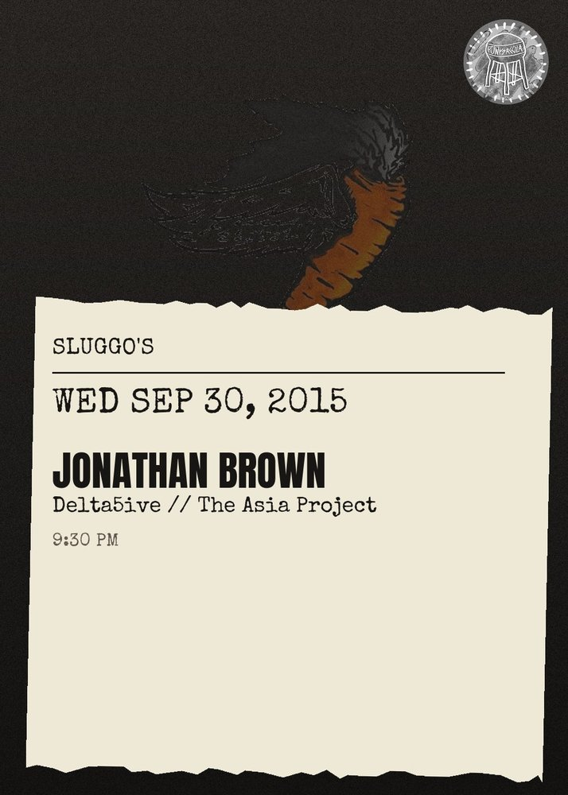

Jonathan Brown, Delta5ive, The Asia Project
Jonathan Brown (New Orleans)\nhttps:\/\/soundcloud.com\/jonathanbrownmusic\n\nJonathan Brown is a time traveler. He\u2019s finishing his second master\u2019s degree in Creative Writing, while working as a full time public school teacher, while smashing live shows with his band around the Southeast, while recording some of the most abstract and intelligent hip hop on the planet. He doesn\u2019t sleep. Or maybe he\u2019s always dreaming.\n\nOn stage, Jonathan is a rhinoceros, trouncing around the stage; on page, he\u2019s an alchemist, transmuting vulnerability into a source of peace. He\u2019s a prism splitting light in all directions. Ego is a liability. Open to everything. Attach to nothing.\n\nDelta5ive (Pensacola)\nhttp:\/\/delta5ive.bandcamp.com\/\n\nThe Asia Project (Ft. Lauderdale\/Pensacola)\nhttps:\/\/www.facebook.com\/theasiaproject\/